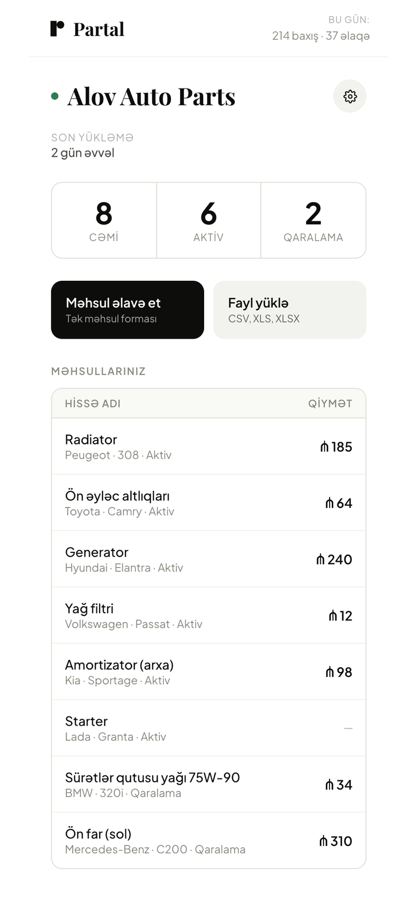
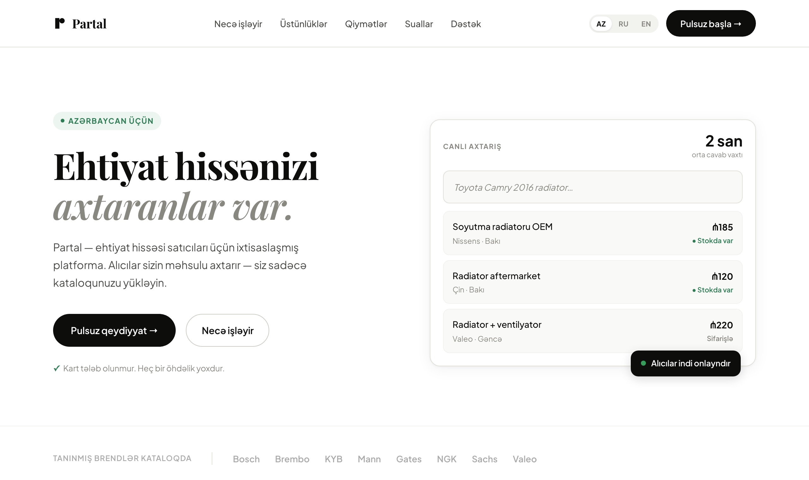

Partal — a spare-parts search engine for Azerbaijan
Live at az.partal.app — buyer side working, seller sign-in currently broken and deliberately not fixed (see Status). Personal project: market, product, interface and code, all of it mine.
Buying a car part in Azerbaijan means calling around. Sellers are real shops with real stock, but their inventory lives in a notebook or an Excel file, and their advertising is a scatter of listings on OLX, Tap.az and Lalafo — classifieds built for selling one used sofa, not for a shop with four hundred SKUs. The buyer types "radiator Peugeot 308" into Google and gets nothing useful. The stock exists; it just isn't findable.
Refused: being the marketplace
The obvious version of this product takes a commission. Cart, checkout, escrow, dispute resolution — the model every marketplace deck describes. I built the other one deliberately: Partal takes no commission, holds no money, and is not a party to the sale. The buyer taps a number and calls the seller, or opens WhatsApp.
The reason is that payments are the hardest part of this market and the least valuable one to solve first. Card penetration is uneven, a lot of trade is cash on pickup, and a part often needs a phone call anyway — the buyer wants to confirm it fits their engine before committing. Inserting checkout between them would add the whole apparatus of a payment business, and remove the conversation that actually closes the sale. So the product's single job is narrower and honest: make the seller findable. That decision is what let one person ship it.
Two products in one app
A single React SPA carries two modes. Buyer is the default and needs no account — search, results, a bottom sheet with the part and the seller's contacts. Seller is behind authentication — catalogue, product form, bulk upload, shop profile, and a daily counter of views and contacts.
Sellers sign in with a phone number and an SMS code, not email and password. This isn't a preference, it's the market: the people running these shops transact by phone all day, and half of them don't have a working email address they check. The phone number is also what the buyer will call, so registration collects the one identifier the product actually needs.
Search built for how people actually type
No dropdowns for make, model and year. The field takes a sentence —
Radiator Peugeot 308 2016 1.6 — and a parser pulls it apart into
brand, model, year, engine and part type. It handles three languages in one string,
because that's how the country writes: a buyer types Azerbaijani part names with
Russian brand spellings and Latin model numbers, in one breath, and any of those may be
abbreviated or misspelled.
Results are then scored rather than filtered to an exact match, so a near-miss still surfaces instead of returning an empty page — in a market this thin, showing the wrong-year radiator from the right shop is more useful than showing nothing. Sorting puts in-stock items first and cheaper items above expensive ones.
The real bottleneck was supply, not search
A search engine over an empty database is worth nothing, and a shop with four hundred parts will not type them into a web form one at a time. So the seller side is mostly a data-entry problem wearing a product's clothes.
Sellers upload the file they already keep — a CSV or XLS export from whatever they use. It is always messy: missing prices, blank years, part names in mixed languages, columns in an order nobody agreed on. The upload therefore lands on a review screen before it lands in the database: every row is shown with a status — fine, suspicious, broken — and the seller confirms or fixes before publishing. Publishing writes the whole batch in one transaction.
The review step exists because the alternative fails twice: silently importing garbage fills search results with junk, and rejecting the whole file on the first bad row means the seller gives up and never comes back. Neither of those is recoverable — a shop that abandons the upload doesn't try again next week.
Trade-offs I made on purpose
Every one of these is a place where the textbook answer is different, and the reason matters more than the choice.
| Decision | Why, and what it costs |
|---|---|
| Filtering and scoring run on the client, not in the database query | Server-side filtering here needs composite indexes, and every new filter combination needs another one. It would also break every document written before the region field existed, since a query on a missing field returns nothing. Client-side filtering keeps old records visible and new filters free. It stops scaling once the catalogue outgrows a single subscription — a known, accepted ceiling, not an oversight. |
| React compiled in the browser, no build step, one file | No toolchain to maintain, deploys are a file copy, and any change is one edit away from live. The cost is real and I'd fix it first at scale: the browser compiles on every load, and nothing is minified. |
| Phone and SMS code instead of email and password | Matches how sellers in this market operate, and collects the number the buyer will call anyway. Costs money per message and makes account recovery a support problem. |
| Bot protection wired in before there were users | The whole catalogue is readable by design — that's the point of the product — so the database is exposed to scraping from day one. Cheap to add at the start, painful to retrofit after someone finds it. |
Analytics as a feature, not a dashboard for me
Product events — a seller registering, a buyer tapping a contact button — are tracked from the first version. Alongside them, each seller gets their own daily counters of views and contacts, incremented server-side.
That second part is deliberately a feature rather than instrumentation. A shop owner who uploads a catalogue and never hears anything back concludes it didn't work. Showing them "eleven people looked, two called" is the only argument the product can make for itself, and it's the number that decides whether they upload again next month. It's also the retention metric I'd have needed anyway — the same counter serves the seller and answers my question.


The two audiences needed two front doors. Buyers arrive wanting a part and should meet a search field with nothing in the way. Sellers need to be convinced of a proposition — what it is, why it isn't OLX, what it costs — so they get a marketing page in Azerbaijani, Russian and English, with paid tiers shown as coming later. Charging for a directory nobody has searched yet would be dishonest, and the free tier is what makes the first upload cost nothing to consider.
Status
The buyer side is up and can be checked right now: the site loads, and the seller count in the footer is read live from the database. The seller side is not. Phone sign-in stopped working at some point over the past months — App Check fails to obtain a reCAPTCHA token, so authentication is refused before it starts. Reads still pass, which is why the catalogue renders and only the login is dead. It is a key or a domain allowlist, not a code change.
I know that and haven't fixed it. Partal never had distribution — I built the product and never went and sold it to shops, which is the real next step and a different job from this one. A service with no users doesn't earn maintenance, and I would rather say that plainly than keep a dead login behind a portfolio link and hope nobody clicks it. If the product were picked up again, the key is a ten-minute fix and the last thing I'd worry about.
So the honest number is four seller accounts. Two are mine from testing. One is a friend I asked. The fourth is a stranger who found an unadvertised site and registered on their own. That is one real data point, and I'd rather report it as one than round it up to four — but it is the one I'd have wanted: somebody with no context and nobody explaining it understood the proposition well enough to sign up.
The catalogue behind the search is 84 products, and all 84 are mine — generated to exercise the query parser, the scoring and the bulk import against deliberately messy input. No shop has uploaded real stock yet. I'm naming that plainly because a product count is exactly the number that looks like traction and isn't: what those 84 rows prove is that the import path and the search work, which is a claim about the build, not about the market.
If it were picked up again, the order would be: sell it to twenty shops in Baku by hand before touching the code again, then fix the two ceilings named above — the client-side query and the in-browser compile — only once there's enough catalogue to feel them.